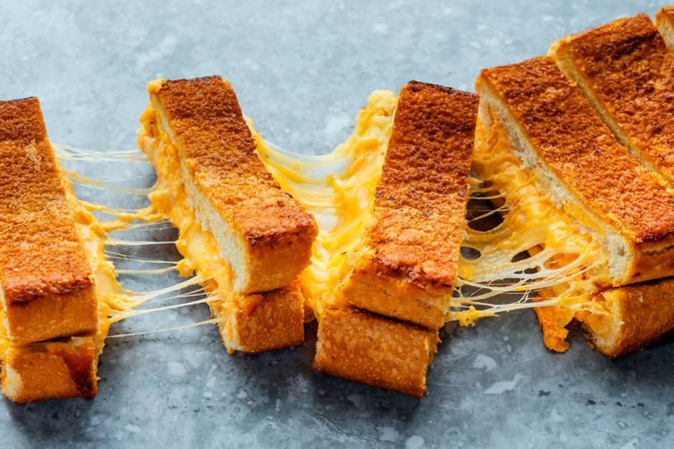

Grilled Cheese Recipe

Description
This is a recipe from Spruce Eats for a Giant Grilled Cheese sandwich.
- Servings: 1 hungry person
- Prep Time: 5 minutes
- Cook Time: 10 minutes
Ingredients
- 2 thick slices of white sourdough
- 4 slices of cheddar cheese
- A lot of butter
Steps
- Heat skillet over medium heat
- Spread butter on one side of both pieces of bread
- Put one slice of bread buttered side down in skillet
- Put sliced cheese on top of bread
- Put second slice of bread buttered side up on top of cheese
- Cook for 3-4 minutes until golden brown, then flip over
- Continue to monitor bread, turning when necessary until both sides are golden brown